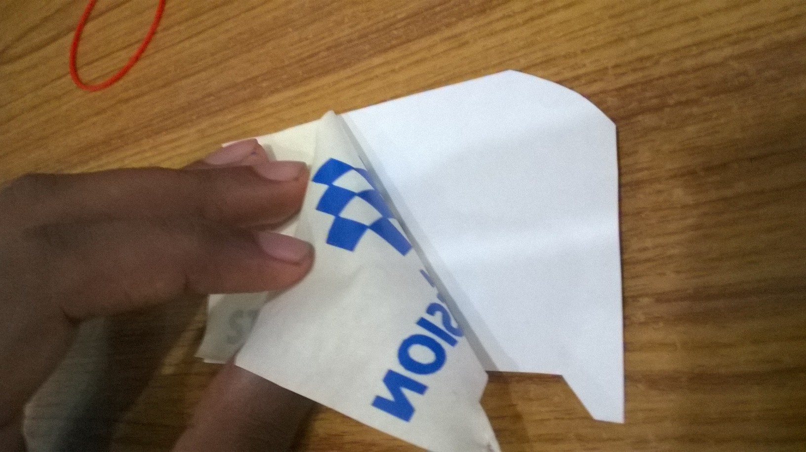
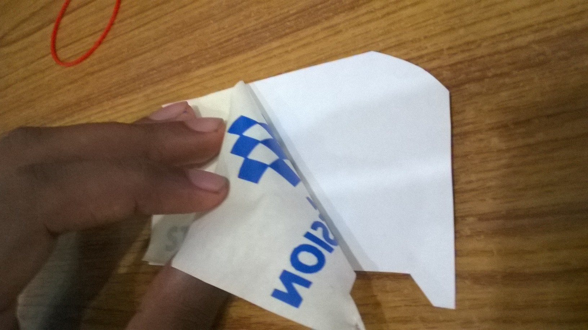

Week 1
Introduction
Vinyl Cutter
Hi all
INtro
Day 2Installations
Download and install all softwares and packages for fablab
“Terminal here” addon for Nautilus
fab modules compiled version
Instructions in kokompe web site http://kokompe.cba.mit.edu/
kokopelli retro
Install dependencies from kokompe web site
Unzip the folder
Open folder in terminal
make fab
cd bin
./kokopelli -r
inkscape
openscad
gimp
cura
Text editor
Day 3
Accounts
Create accounts
fablab.io account : https://www.fablabs.io/users/4692
fabcloud : git.fabcloud.io
github : http://mic20m.github.io/
dropbox :
flicker : yahoo
sketchfab : sketchfab.com/mic20m
Configure Git
https://pages.github.com/
git config --global user.name "YOUR NAME"
git config --global user.email "YOUR EMAIL ADDRESS"
if clone with https - password and username
ssh - private key,public key
Day 4
Cleaning and inventory
clean fablab


 
